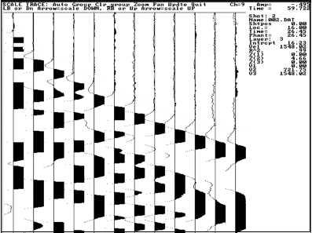

Data
Signals that get recorded
Each geophone produces an electrical signal that is proportional to ground motion (in one direction - usually vertical, but horizontal with special geophones used for shear wave work). That signal is recorded for a short period of time starting at the moment that the source of energy begins. We observe these signals by plotting them as one wiggly line for each geophone’s signal. These signals are plotted next to each other so that ground motion at each geophone can be seen as a function of time. An example showing ground motion at 24 geophones is shown below.
On this plot, one geophone was not working properly. Geophones are labeled with the first closest to the source. As expected, ground motion occurred earlier at geophones closest to the source. For geophones 1 through 10, it seems as if there was no ground motion at later times, however this is an artifact of the “gain” (amplification) applied to these traces. Gain is lower for geophone signals near the source because signal amplitudes are larger. If the signals within the blue box are amplified and replotted, the adjustable figure below results.
|
Original First breaks picked Straight line segments |
 |
This figure shows shorter segments of traces from 12 geophones. The signal amplitudes have been amplified, so all ground motions are visible. There are clear beginnings of ground motion for each trace, which appear later in time for traces farther from the source. Finding exactly what time the ground first moved at each geophone is called first break picking. It is not difficult in this case, but it can be challenging if signals are weak. Use radio buttons next to the figure to see the result of picking first breaks (also known as first arrivals) on this figure. Once the picks are chosen, it becomes evident that there is a definite pattern to the arrivals–there are straight lines joining the first breaks of several adjacent traces. The third radio button reveals straight line patterns emphasized by drawing red lines.
We will learn that first arrivals are either direct signals (for near geophones) or refractions that have traveled along subsurface interfaces. The objective of seismic refraction surveys is to determine the geometry of subsurface interfaces, and this can be derived by analysis of the pattern of first arrivals.